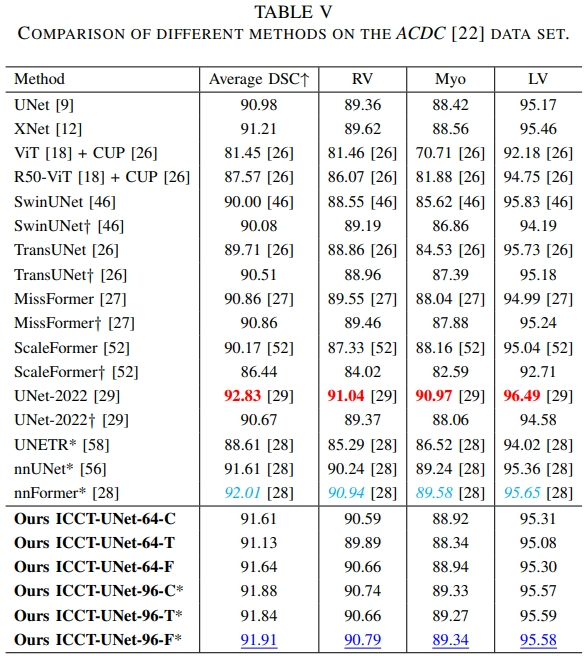
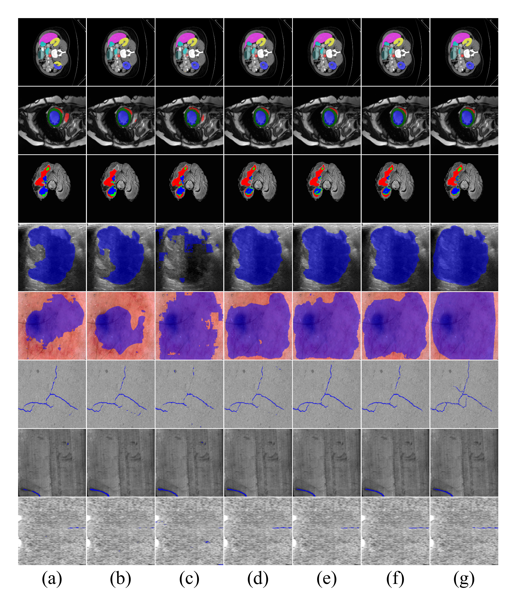

Perception-Aware Texture Similarity Prediction

|
The architecture of the proposed PATSP-Net, which contains the BiLAViT (a) and the RSLoss (e). Also, the internal structures of CI-BFM, BiLA and BAB are shown in (b), (c) and (d) respectively.
Abstract
Texture similarity plays important roles in texture analysis and material recognition. However, perceptuallyconsistent fine-grained texture similarity prediction is still challenging. The discrepancy between the texture similarity data
obtained using algorithms and human visual perception has been demonstrated. This dilemma is normally attributed to the texture representation and similarity metric utilised by the algorithms,
which are inconsistent with human perception. To address this
challenge, we introduce a Perception-Aware Texture Similarity
Prediction Network (PATSP-Net). This network comprises a
Bilinear Lateral Attention Transformer network (BiLAViT) and
a novel loss function, namely, RSLoss. The BiLAViT contains
a Siamese Feature Extraction Subnetwork (SFEN) and a Metric
Learning Subnetwork (MLN), designed on top of the mechanisms
of human perception. On the other hand, the RSLoss measures
both the ranking and the scaling differences. To our knowledge,
either the BiLAViT or the RSLoss has not been explored for
texture similarity tasks. The PATSP-Net performs better than,
or at least comparably to, its counterparts on three data sets
for different fine-grained texture similarity prediction tasks. We
believe that this promising result should be due to the joint
utilization of the BiLAViT and RSLoss, which is able to learn the
perception-aware texture representation and similarity metric.
Links


Experimental Results

|
 |
Quantitative Results on Medical Image Segmentation datasets Synapse, ACDC.
|  |
| |
Qualitative Results on Medical Image Segmentation and Defect Image Segmentation of (a) UNet, (b) TransUnet, (c) SwinUnet and ours (d) ICCTUNet-T, (e) ICCTUNet-C, (f) ICCTUNet-F and (g) Ground-Truth